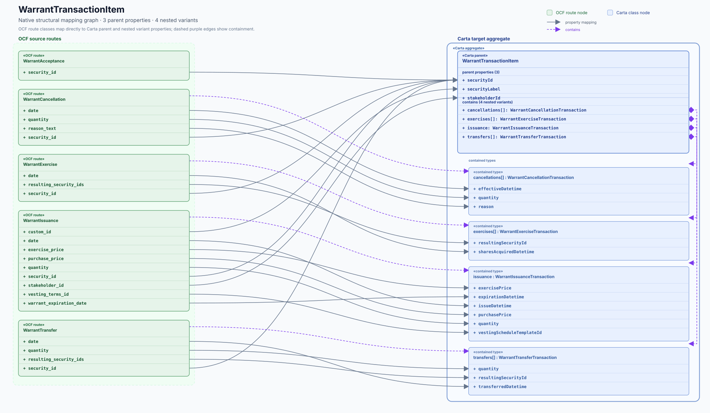

Carta target definition
WarrantTransactionItem
#/$defs/WarrantTransactionItem
{kind=link}

Target evidence
Who can fill this target?
WarrantCancellation— · security_id · OCF type: string ↗
Open mapping issue ↗WarrantExercise— · security_id · OCF type: string ↗
Open mapping issue ↗WarrantIssuance— · stakeholder_id · OCF type: string ↗
Open mapping issue ↗WarrantTransfer— · OCF type: WarrantTransfer ↗
Open mapping issue ↗Property ledger
Slot by slot
Schema types are shown for both sides of each mapping slot.
| Carta property / type | Status | OCF evidence / type | |
|---|---|---|---|
| cancellationsCarta type array<WarrantCancellationTransaction> ↗ | structural | WarrantCancellationOCF type WarrantCancellation ↗ | Issue ↗ |
| exercisesCarta type array<WarrantExerciseTransaction> ↗ | structural | WarrantExerciseOCF type WarrantExercise ↗ | Issue ↗ |
| issuanceCarta type WarrantIssuanceTransaction ↗ | structural | WarrantIssuanceOCF type WarrantIssuance ↗ | Issue ↗ |
| securityIdCarta type string ↗ | direct | Issue ↗ | |
| securityLabelCarta type string ↗ | direct | WarrantIssuance.custom_idOCF type string ↗ | Issue ↗ |
| stakeholderIdCarta type string ↗ | direct | WarrantIssuance.stakeholder_idOCF type string ↗ | Issue ↗ |
| transfersCarta type array<WarrantTransferTransaction> ↗ | structural | WarrantTransferOCF type WarrantTransfer ↗ | Issue ↗ |